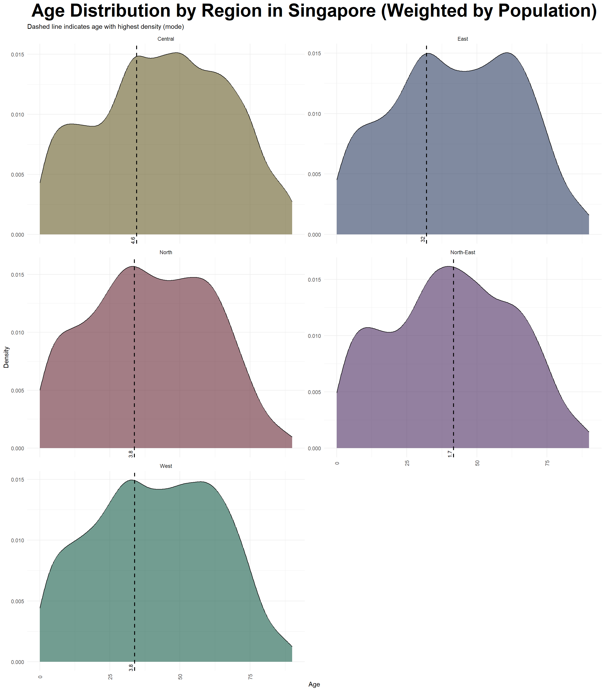
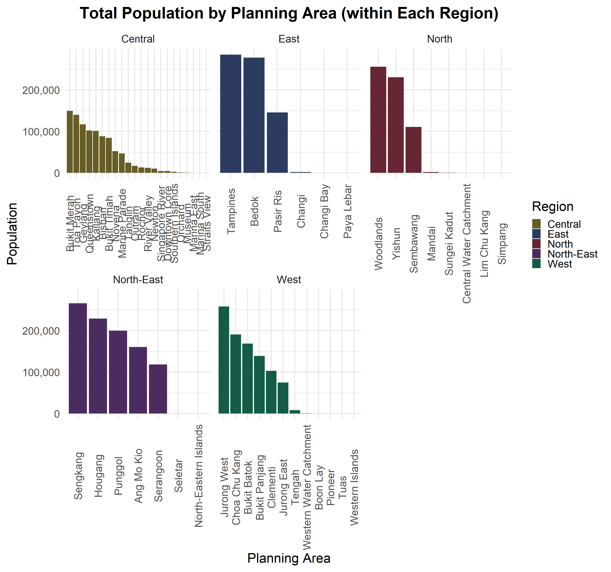

Code
pacman::p_load(tidyverse, haven,
ggrepel, ggthemes,
ggridges, ggdist,colorspace,ggdist,
patchwork, scales, ggplot2,
matrixStats, treemapify, showtext)Note: Please toggle between ‘Show’ and ‘Hide’ above based on your preference for viewing the R codes.
The dataset used in this exercise contains population statistics for Singapore as of 2024, broken down by planning area, subzone, age, and sex. It provides the number of residents across different demographic groups, allowing for a granular look at how Singapore’s population is distributed geographically and demographically.
In this exercise, we apply Exploratory Data Analysis (EDA) techniques using the ggplot2 package in R. Specifically, we explore:
The variation in age distribution across different planning areas and regions.
The male-to-female ratio by region and how gender composition varies across Singapore.
The overall population distribution of Singapore, examining patterns and trends across demographic groups (age and sex) and geographic areas (regions and planning areas).
These analyses help us give insights, spot anomalies, and better understand the underlying structure of Singapore’s demographic landscape.
We load the following R packages using the pacman::p_load() function:
tidyverse: Core collection of R packages designed for data science.
haven: To read in data formats such as SAS and SPSS.
ggrepel: To provide geoms for ggplot2 to repel overlapping text labels.
ggthemes: To use additional themes for ggplot2.
patchwork: To prepare composite figures created using ggplot2.
ggridges: To plot ridgeline plots.
ggdist: For visualizations of distributions and uncertainty.
scales: Provides the internal scaling infrastructure used by ggplot2.
matrixStats: Provides efficient functions for row and column operations on matrices and data frames.
treemapify: Allows the creation of treemap visualizations using ggplot2 syntax.
showtext: Enables the use of custom fonts in R plots for better typography.
pacman::p_load(tidyverse, haven,
ggrepel, ggthemes,
ggridges, ggdist,colorspace,ggdist,
patchwork, scales, ggplot2,
matrixStats, treemapify, showtext)The dataset used in the exercise is Singapore Residents by Planning Area / Subzone, Single Year of Age and Sex, June 2024, retrieved from the Department of Statistics, Singapore. Let’s import this dataset as rrespopagesex2024 and how the dataset looks like.
respopagesex2024 <- read_csv("respopagesex2024.csv")
show_col_types = FALSE
knitr::kable(head(respopagesex2024))| PA | SZ | Age | Sex | Pop | Time |
|---|---|---|---|---|---|
| Ang Mo Kio | Ang Mo Kio Town Centre | 0 | Males | 10 | 2024 |
| Ang Mo Kio | Ang Mo Kio Town Centre | 0 | Females | 10 | 2024 |
| Ang Mo Kio | Ang Mo Kio Town Centre | 1 | Males | 10 | 2024 |
| Ang Mo Kio | Ang Mo Kio Town Centre | 1 | Females | 10 | 2024 |
| Ang Mo Kio | Ang Mo Kio Town Centre | 2 | Males | 10 | 2024 |
| Ang Mo Kio | Ang Mo Kio Town Centre | 2 | Females | 10 | 2024 |
Let’s take a first look at the dataset, variables and datatypes using glimpse().
glimpse(respopagesex2024)Rows: 60,424
Columns: 6
$ PA <chr> "Ang Mo Kio", "Ang Mo Kio", "Ang Mo Kio", "Ang Mo Kio", "Ang Mo K…
$ SZ <chr> "Ang Mo Kio Town Centre", "Ang Mo Kio Town Centre", "Ang Mo Kio T…
$ Age <chr> "0", "0", "1", "1", "2", "2", "3", "3", "4", "4", "5", "5", "6", …
$ Sex <chr> "Males", "Females", "Males", "Females", "Males", "Females", "Male…
$ Pop <dbl> 10, 10, 10, 10, 10, 10, 10, 10, 30, 10, 20, 10, 20, 30, 30, 10, 3…
$ Time <dbl> 2024, 2024, 2024, 2024, 2024, 2024, 2024, 2024, 2024, 2024, 2024,…Based on the result, there are 60,424 records, which is consistent with the CSV file, indicating that there are no missing records while importing. There are 6 variables, and the corresponding datatypes are shown as well. Take note that Age is defined as a character, so we will be converting that to a numeric data type later.
Using the duplicated function, we see that there are no duplicate entries in the data.
respopagesex2024[duplicated(respopagesex2024),]# A tibble: 0 × 6
# ℹ 6 variables: PA <chr>, SZ <chr>, Age <chr>, Sex <chr>, Pop <dbl>,
# Time <dbl>There are 55 planning zones and 332 subzones in Singapore, which is consistent with this dataset. However, I felt that exploring each subzone individually would not be practical for a high-level analysis. So, a ‘Region’ column is added to the dataset, indicating which of the five major regions (East, West, North, North-East, or Central) each planning zone belongs to. This grouping makes it easier to understand broad demographic patterns across Singapore. To achieve this, an additional dataset from Wikipedia listing the planning zones and their corresponding regions was used. A left join is performed to link these two datasets using the function left_join().
planning_areas <- read_csv("Planning_areas_of_Singapore_2.csv")
# Check column names
colnames(respopagesex2024)[1] "PA" "SZ" "Age" "Sex" "Pop" "Time"colnames(planning_areas) [1] "Name (English)" "Malay" "Chinese" "Pinyin"
[5] "Tamil" "Region" "Area (km2)" "Population"
[9] "Density (/km2)" "Subzones" respop_with_region <- respopagesex2024 %>%
left_join(planning_areas, by = c("PA" = "Name (English)"))
glimpse(respop_with_region)Rows: 60,424
Columns: 15
$ PA <chr> "Ang Mo Kio", "Ang Mo Kio", "Ang Mo Kio", "Ang Mo Kio…
$ SZ <chr> "Ang Mo Kio Town Centre", "Ang Mo Kio Town Centre", "…
$ Age <chr> "0", "0", "1", "1", "2", "2", "3", "3", "4", "4", "5"…
$ Sex <chr> "Males", "Females", "Males", "Females", "Males", "Fem…
$ Pop <dbl> 10, 10, 10, 10, 10, 10, 10, 10, 30, 10, 20, 10, 20, 3…
$ Time <dbl> 2024, 2024, 2024, 2024, 2024, 2024, 2024, 2024, 2024,…
$ Malay <chr> NA, NA, NA, NA, NA, NA, NA, NA, NA, NA, NA, NA, NA, N…
$ Chinese <chr> "宏茂桥", "宏茂桥", "宏茂桥", "宏茂桥", "宏茂桥", "宏茂桥", "宏茂桥", "宏茂桥…
$ Pinyin <chr> "Hóngmàoqiáo", "Hóngmàoqiáo", "Hóngmàoqiáo", "Hóngmào…
$ Tamil <chr> "ஆங் மோ கியோ", "ஆங் மோ கியோ", "ஆங் மோ கியோ", "ஆங் மோ கியோ", "ஆங் மோ கியோ"…
$ Region <chr> "North-East", "North-East", "North-East", "North-East…
$ `Area (km2)` <dbl> 13.94, 13.94, 13.94, 13.94, 13.94, 13.94, 13.94, 13.9…
$ Population <chr> "161,000", "161,000", "161,000", "161,000", "161,000"…
$ `Density (/km2)` <chr> "13,400", "13,400", "13,400", "13,400", "13,400", "13…
$ Subzones <chr> "12", "12", "12", "12", "12", "12", "12", "12", "12",…knitr::kable(head(respop_with_region))| PA | SZ | Age | Sex | Pop | Time | Malay | Chinese | Pinyin | Tamil | Region | Area (km2) | Population | Density (/km2) | Subzones |
|---|---|---|---|---|---|---|---|---|---|---|---|---|---|---|
| Ang Mo Kio | Ang Mo Kio Town Centre | 0 | Males | 10 | 2024 | NA | 宏茂桥 | Hóngmàoqiáo | ஆங் மோ கியோ | North-East | 13.94 | 161,000 | 13,400 | 12 |
| Ang Mo Kio | Ang Mo Kio Town Centre | 0 | Females | 10 | 2024 | NA | 宏茂桥 | Hóngmàoqiáo | ஆங் மோ கியோ | North-East | 13.94 | 161,000 | 13,400 | 12 |
| Ang Mo Kio | Ang Mo Kio Town Centre | 1 | Males | 10 | 2024 | NA | 宏茂桥 | Hóngmàoqiáo | ஆங் மோ கியோ | North-East | 13.94 | 161,000 | 13,400 | 12 |
| Ang Mo Kio | Ang Mo Kio Town Centre | 1 | Females | 10 | 2024 | NA | 宏茂桥 | Hóngmàoqiáo | ஆங் மோ கியோ | North-East | 13.94 | 161,000 | 13,400 | 12 |
| Ang Mo Kio | Ang Mo Kio Town Centre | 2 | Males | 10 | 2024 | NA | 宏茂桥 | Hóngmàoqiáo | ஆங் மோ கியோ | North-East | 13.94 | 161,000 | 13,400 | 12 |
| Ang Mo Kio | Ang Mo Kio Town Centre | 2 | Females | 10 | 2024 | NA | 宏茂桥 | Hóngmàoqiáo | ஆங் மோ கியோ | North-East | 13.94 | 161,000 | 13,400 | 12 |
The primary variables chosen for this exercise are given below.
| Field Name | Field Description |
|---|---|
| PA | Name of planning area where the population record belongs |
| SZ | Name of subzone within the planning area |
| Age | Age of the individuals |
| Sex | Gender of the population group |
| Pop | Total population count for the given age, sex, and location |
| Region | Broad geographic region linked to each planning area |
Remaining variables will be excluded to give the cleaned dataset - respop_cleaned.
respop_cleaned <- respop_with_region %>%
select(-`Time`, -`Malay`, -`Chinese`, -`Pinyin`, -`Tamil`, -`Area (km2)`, -`Population`, -`Density (/km2)`, -`Subzones`)
knitr::kable(head(respop_cleaned))| PA | SZ | Age | Sex | Pop | Region |
|---|---|---|---|---|---|
| Ang Mo Kio | Ang Mo Kio Town Centre | 0 | Males | 10 | North-East |
| Ang Mo Kio | Ang Mo Kio Town Centre | 0 | Females | 10 | North-East |
| Ang Mo Kio | Ang Mo Kio Town Centre | 1 | Males | 10 | North-East |
| Ang Mo Kio | Ang Mo Kio Town Centre | 1 | Females | 10 | North-East |
| Ang Mo Kio | Ang Mo Kio Town Centre | 2 | Males | 10 | North-East |
| Ang Mo Kio | Ang Mo Kio Town Centre | 2 | Females | 10 | North-East |
glimpse(respop_cleaned)Rows: 60,424
Columns: 6
$ PA <chr> "Ang Mo Kio", "Ang Mo Kio", "Ang Mo Kio", "Ang Mo Kio", "Ang Mo…
$ SZ <chr> "Ang Mo Kio Town Centre", "Ang Mo Kio Town Centre", "Ang Mo Kio…
$ Age <chr> "0", "0", "1", "1", "2", "2", "3", "3", "4", "4", "5", "5", "6"…
$ Sex <chr> "Males", "Females", "Males", "Females", "Males", "Females", "Ma…
$ Pop <dbl> 10, 10, 10, 10, 10, 10, 10, 10, 30, 10, 20, 10, 20, 30, 30, 10,…
$ Region <chr> "North-East", "North-East", "North-East", "North-East", "North-…gender_summary_long <- respop_cleaned %>%
group_by(Region, Sex) %>%
summarise(Total_Pop = sum(Pop), .groups = "drop")
#Calculate total population per region
gender_summary_long <- gender_summary_long %>%
group_by(Region) %>%
mutate(
Region_Total = sum(Total_Pop),
Percent = (Total_Pop / Region_Total) * 100
)
#Plot side-by-side bars
ggplot(gender_summary_long, aes(x = Region, y = Total_Pop, fill = Sex)) +
geom_col(position = "dodge") +
geom_text(
aes(label = paste0(round(Percent, 1), "%")),
position = position_dodge(width = 0.9),
vjust = -0.5,
size = 3, family = "nunito"
) +
labs(
title = "Male and Female Population by Region",
x = "Region",
y = "Total Population"
) +
scale_y_continuous(labels = scales::comma) +
theme_minimal(base_family = "nunito") + theme(axis.text.x = element_text(angle = 90, vjust = 0.5),plot.title = element_text(hjust = 0.5, size = 15, face = "bold", family = "nunito")) +
scale_fill_manual(values = c("Females" = "#662633", "Males" = "#2C3C60"))
Insights:
In all five regions, females make up a slightly higher percentage of the total population, with the Central and North-East regions showing the largest gaps.
The total population size varies significantly by region. Central and North-East regions have noticeably larger total populations compared to the North, East, and West, highlighting regional population concentration and urban density differences.
Despite minor percentage differences, the male-to-female split remains close to 50 - 50 in all regions, suggesting a stable and balanced gender distribution at the regional level in Singapore.
Age is stored as a character datatype because it contains values ‘90_and_Over’ to represent residents aged over 90. To simplify this for an age distribution, these records will be recoded as ‘90’ before converting them to a numeric datatype.
respop_cleaned <- respop_cleaned %>%
mutate(
Age = as.character(Age),
Age = ifelse(Age == "90_and_Over", "90", Age),
Age = as.numeric(Age)
)
# Calculate age with highest density per region
mode_age <- respop_cleaned %>%
group_by(Region) %>%
group_split() %>%
map_df(~ {
d <- density(rep(.x$Age, .x$Pop))
data.frame(
Region = unique(.x$Region),
mode_age = d$x[which.max(d$y)]
)
})
# Plot with vertical mode lines
ggplot(respop_cleaned, aes(x = Age, weight = Pop, fill = Region)) +
geom_density(alpha = 0.6, adjust = 1) +
geom_vline(data = mode_age, aes(xintercept = mode_age), color = "black", linetype = "dashed", size = 0.8) +
geom_text(
data = mode_age,
mapping = aes(x = mode_age, y = 0, label = paste0("Peak: ", round(mode_age, 1))),
inherit.aes = FALSE,
angle = 90, vjust = -0.5, hjust = 1.1, size = 3
) +
facet_wrap(~ Region, scales = "free_y", ncol = 2) +
labs(
title = "Age Distribution by Region in Singapore (Weighted by Population)",
subtitle = "Dashed line indicates age with highest density (mode)",
x = "Age",
y = "Density"
) +
theme(legend.position = "none") +
theme_minimal(base_family = "nunito") + theme(legend.position = "none",axis.text.x = element_text(angle = 90, vjust = 0.5),plot.title = element_text(hjust = 0.5, size = 30, face = "bold", family = "nunito")) +
scale_fill_manual(values = c("West" = "#145C47", "East" = "#2C3C60", "North" = "#662633","North-East" = "#4B2C60","Central" = "#665C26"))
Insights:
# Summarize total population by planning area for each region
planning_area_summary <- respop_cleaned %>%
group_by(Region, PA) %>%
summarise(Total_Pop = sum(Pop), .groups = "drop")
# Bar chart
ggplot(planning_area_summary, aes(x = reorder(PA, -Total_Pop), y = Total_Pop, fill = Region)) +
geom_col() +
facet_wrap(~ Region, scales = "free_x") +
labs(title = "Total Population by Planning Area (within Each Region)", x = "Planning Area", y = "Population") +
scale_y_continuous(labels = scales::comma) +
theme_minimal(base_family = "nunito",base_size = 25) +
theme(axis.text.x = element_text(angle = 90, vjust = 0.5),plot.title = element_text(hjust = 0.5, size = 30, face = "bold", family = "nunito")) +
scale_fill_manual(values = c("West" = "#145C47", "East" = "#2C3C60", "North" = "#662633","North-East" = "#4B2C60","Central" = "#665C26"))
Insights:
Here are the findings based on the exploratory data analysis (EDA) conducted.
Balanced Gender Distribution: The total residential population of Singapore in 2024 demonstrates a balanced gender split across all five regions. While the differences are small, females slightly outnumber males in all regions, particularly in the Central and North-East regions. This balanced gender ratio suggests that there are no major demographic skews across the country, which supports stable social dynamics and balanced workforce participation.
Concentration in Key Residential Hubs: Despite having 55 planning areas and over 300 subzones, the majority of Singapore’s residents are concentrated in just a few major residential hubs within each region. For example, Tampines in the East, Woodlands in the North, Sengkang in the North-East, and Jurong West in the West dominate their respective regions in population size. These hubs serve as focal points for housing and amenities, while many smaller planning areas have relatively lower populations or serve specialized purposes.
Consistent Age Distribution: Across all regions, the age distribution pattern is quite consistent, with the population density peaking between the ages of 20 and 40. This indicates that Singapore has a strong core of working-age residents, which is essential for supporting economic productivity and social stability. While older populations are present, they taper off in density, suggesting a gradually aging society but not a sharp top-heavy age structure yet.
The 2024 residential population landscape in Singapore reveals a highly urbanized, working demographic, centered in key planning zones. While the population is evenly balanced between genders, regional variations in density and land use shape where people live. These insights can inform urban planning, housing development, and resource allocation for the coming years.
This is a review of a data visualization submitted by my classmate in ISSS608 - TA NGUYEN THAO NGUYEN. I will be stating the pros and cons of Cindy’s work, along with an improved version of her plot. This peer evaluation is helpful to improve our data analysis and visualization skills, and look out for details that were not visible to us.
Clear Comparison Between Groups: Using side-by-side bars for total vs. elderly population enables a quick visual comparison, making it easy to spot which planning areas have larger elderly proportions.
Effective Use of Color and Labels: The contrasting colors (gold and purple) and direct value labels on bars improve readability and help viewers interpret values without needing to refer to the axis constantly.
Insightful Focus: Highlighting elderly population (65+) alongside total population adds value by addressing demographic trends — a relevant and important lens for policy and planning.
Overlapping Bars and Misleading Lengths: Since both bars start from the same axis, the elderly population bar is visually “on top of” the total bar, but this could mislead viewers into thinking they are stacked or directly proportional. A grouped bar chart or dual-axis plot might reduce confusion.
Missing Percentage Context: Including the percentage of elderly population relative to the total for each planning area (e.g., as text labels or a separate line plot) would add deeper insight beyond raw counts.
Visual Hierarchy Could Be Improved: Right now, the gold bars stand out more than the purple bars, even though the purple ones represent the main variable (total population). Consider reversing this emphasis or softening the elderly bar color to reflect its subset nature.
Below is the improved version of the plot. The enhancements include:
pacman::p_load(tidyverse, haven,
ggrepel, ggthemes,
ggridges, ggdist,colorspace,ggdist,
patchwork, scales, ggplot2,
matrixStats, treemapify, showtext)pop_data <- read_csv("respopagesex2024.csv")
library(tidyverse)
library(scales)
library(forcats)
pop_data <- read_csv("respopagesex2024.csv")
# Summarise total and elderly population by PA
top_areas <- pop_data %>%
group_by(PA) %>%
summarise(
Total = sum(Pop),
Elderly = sum(Pop[Age >= 65]),
.groups = "drop"
) %>%
top_n(15, Total)
# Reshape into long format
plot_data <- top_areas %>%
pivot_longer(cols = c(Total, Elderly),
names_to = "Type",
values_to = "Population") %>%
mutate(
Type = recode(Type,
"Total" = "Total Population",
"Elderly" = "Elderly (65+)")
)
# Reorder PA by Total Population (largest on top)
plot_data <- plot_data %>%
left_join(top_areas %>% select(PA, Total), by = "PA") %>%
mutate(PA = fct_reorder(PA, Total, .desc = TRUE))
# Plot
ggplot(plot_data, aes(x = PA, y = Population, fill = Type)) +
geom_col(position = position_dodge(width = 0.85), width = 0.7) +
geom_text(aes(label = comma(Population)),
position = position_dodge(width = 0.85),
hjust = -0.1, size = 3) +
scale_y_continuous(labels = comma, expand = expansion(mult = c(0, 0.15))) +
scale_fill_manual(values = c("Total Population" = "#8E7DBE", "Elderly (65+)" = "#F1C232")) +
coord_flip() +
labs(
title = "Total vs Elderly Population in Top Planning Areas (2024)",
subtitle = "Planning areas ordered by total population. Elderly population shown in gold.",
x = "Planning Area",
y = "Population",
fill = NULL
) +
theme_minimal(base_family = "Helvetica") +
theme(
plot.title = element_text(face = "bold", size = 15, hjust = 0.5),
plot.subtitle = element_text(size = 11, hjust = 0.5, color = "gray40"),
axis.title = element_text(size = 11),
axis.text = element_text(size = 9),
legend.position = "top",
legend.text = element_text(size = 9)
)